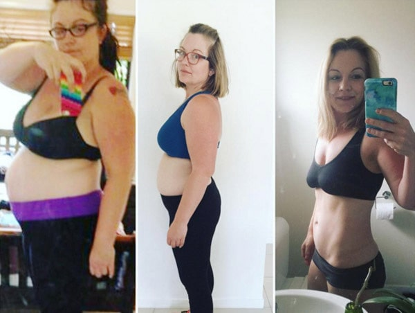
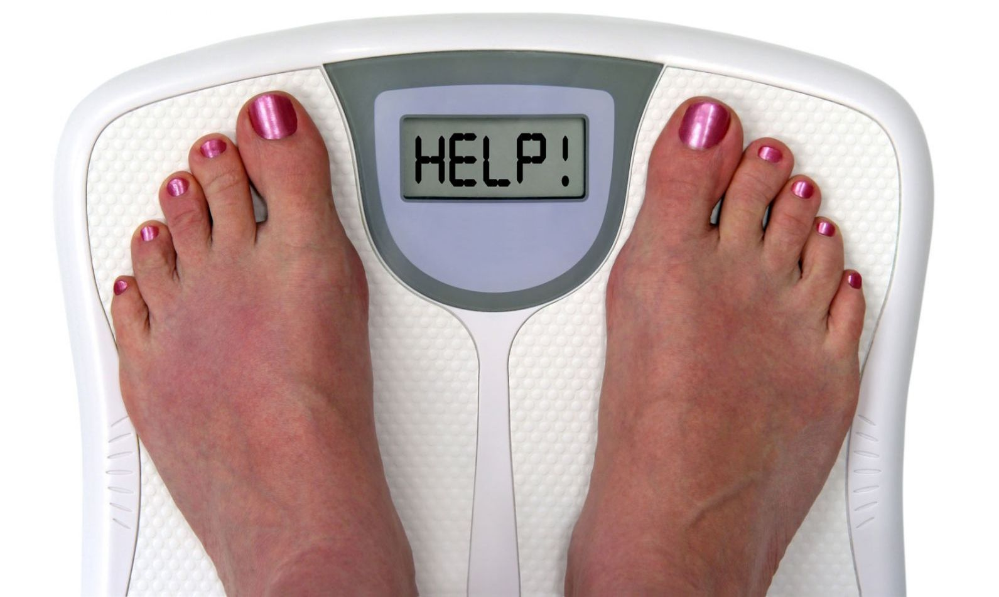
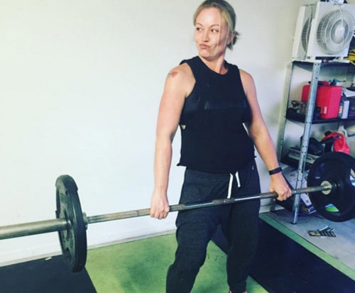
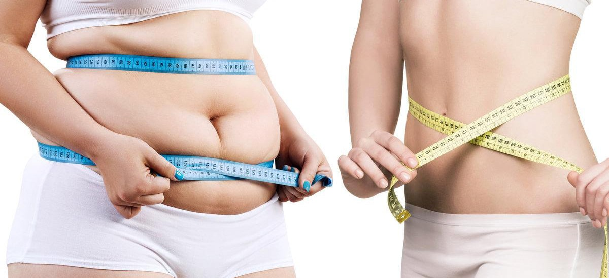
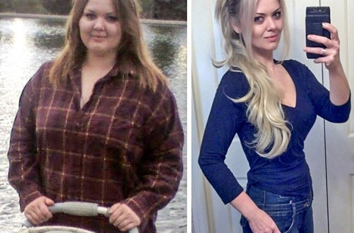
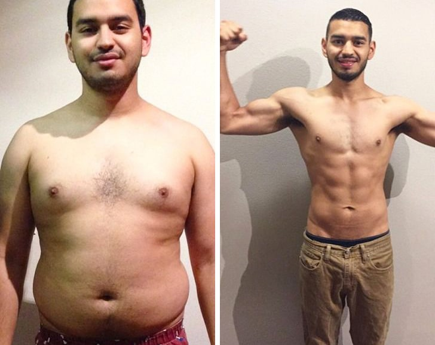
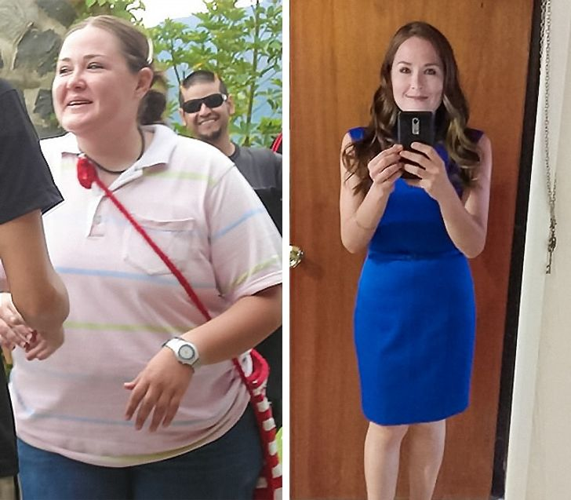
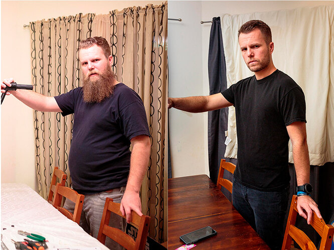

Блог Мамы: Саша расскажет!
О себе: Всем привет! Меня зовут Александра, я мама двоих замечательных дочек и счастливая жена. В своем блоге я делюсь полезными лайфхаками, пишу статьи о психологии и семье.
Лучший способ похудения, который я когда-либо пробовала: минус 40 килограммов и подтянутое тело
Перед тем, как я приступлю к рассказу о чудесном способе похудения, результаты которого поражают всех врачей, давайте разберемся: подойдет ли она вам?


Расскажу на своем примере: я никогда не занималась спортом, мало что понимаю в правильном питании, нутрициологии и диетах. Но, тем не менее, на сегодняшний день я вешу 55 килограммов при росте 168 сантиметров. Я довольна своим телом, муж не может на меня налюбоваться, а дети каждый день говорят, что их мамочка самая красивая. Так было далеко не всегда: когда-то мой вес составлял 95 килограммов, а тело было похоже на бесформенный мешок с картошкой – именно так я себя и ощущала. Для того, чтобы добиться таких результатов, мне не пришлось морить себя голодом, убиваться в спортзале и нанимать дорогостоящих диетологов.

Причиной моего гигантского веса были гормональные проблемы – все из-за увеличения щитовидной железы и нарушений в липолизе.
Врачи мне говорили, что люди с такими заболеваниями никогда не смогут похудеть без тяжелой гормональной терапии.
Но я всегда хотела быть здоровой матерью для своих детей и желанной женщиной для своего мужа! Признаться, в какой-то момент мне казалось, что моя семья трещит по швам. У меня не было сил, чтобы вести домашнее хозяйство, уделять время детям и так далее. Ведь лишний вес – это не только не красиво, это – большой удар по всему организму.
Я была готова пойти на самые крайние меры: сделать операцию по гастрошунтированию, липосакцию или что-то еще в этом роде. Но мне повезло, так как я смогла найти новейшее средство, которое позволяет худеть быстро, эффективно и без вреда для здоровья.
Началось все с командировок в Германию – именно там я и узнала о W-loss. Я и раньше пробовала худеть с помощью всяких разрекламированных средств вроде каких-то порошков, которые надо разводить в воде, сомнительных таблеток и т.д., но никогда не могла добиться желаемых результатов. По большей части, это были просто выброшенные на ветер деньги. Поэтому поначалу я не особо верила в чудесные свойства W-loss. Но попробовать все-таки решилась.

Подруга, с которой мы давно не виделись, решила, что я сделала себе липосакцию и настаивала на том, чтобы я поделилась с ней контактами хирурга, который смог проделать такую ювелирную работу. Я только рассмеялась в ответ: какая липосакция?! ☺ Вся эта магия – заслуга W-loss.
Чем W-loss отличается от других средств?
Во-первых, тем, что он действительно работает. Это не пустая трата времени и денег.
Во-вторых, W-loss не просто избавляет от лишних килограммов, но и улучшает качество тела, делая его более стройным и подтянутым, благодаря четырем основным свойствам:
- Разгоняет метаболизм в два раза и выводит шлаки и токсины из органов ЖКТ. Токсины, накапливаясь в кишечнике, засоряют его, тем самым блокируя процесс похудения. Также они являются причиной астении и апатии.
- Позволяет худеть естественным образом. То есть, это совершенно здоровое и физиологичное похудение, в отличие от многих странных и сомнительных препаратов, вроде тайских таблеток, в которых содержатся яйца паразитов.
- Борется с подкожным и висцеральным жиром, устраняет целлюлит. Минимальный вес чистого жира, от которого вы избавляетесь за неделю – 6 килограммов.
- Активизирует работу мышц даже в спокойном состоянии – то есть, вам не нужно заниматься спортом, чтобы обрести очерченные линии пресса, мышц ног и подтянуть кожу на руках.

Это – четыре необходимых для идеального похудения аспекта. Если отсутствует хотя бы один из них, то тела мечты добиться не получится!
За свою жизнь я перепробовала кучу различных методов похудения. Всякие разрекламированные диеты типа Дюкана, питьевой диеты, дробного питания 16/8. Это все только расшатывало мой обмен веществ и психику, но стабильных результатов добиться не удавалось. Основываясь на своем опыте могу сказать, что W-loss – это единственное реально эффективное средство.
Уже сейчас я понимаю, что, подходя к выбору метода похудения, нужно опираться на четыре фактора: очищение, безопасность, эффективность и повышение качества тела – обо всем я уже рассказывала выше. И все эти аспекты объединены в препарате W-loss.
Эти вещи сейчас кажутся мне настолько естественными и очевидными, хотя раньше я даже не догадывалась об этом. Только более углубленное изучение анатомии и внутренних метаболических процессов человеческого организма позволило мне осознать, насколько это важные вещи.
Не нужно обращаться к хирургам и диетологам! Похудеть дома самостоятельно – это легко.

Это мое экспертное мнение, если хотите. Я похудела на 40 килограммов самостоятельно, так, что даже мама родная меня не узнала.
Дело в том, что механизм действия этого средства основам на исследованиях именитых врачей-диетологов из США: Джоша Коллистера, Генри Хопкинса и Джоди Стоун. Говорят ли вам о чем-то эти имена? Эти люди совершили революцию в области борьбы с лишним весом!
Современный ритм жизни диктует нам такие условия, что далеко не у всех есть свободное время на посещение спортзала или лишние деньги, которые можно потратить на диетолога, который составит вам индивидуальную программу питания. И даже не факт, что вы будете ее придерживаться – вам просто может не хватить силы воли на то, чтобы существенно урезать количество еды. Именно в такие моменты мы можем прибегать к средствам вроде W-loss.
Вот и все, что я хотела рассказать вам. Для тех, кто не верит в простоту и эффективность этого метода могу сказать, что W-loss прошел ряд клинических испытаний в Национальном институте диетологии и правильного питания США.
Результаты моих знакомых, которым я советовала W-loss:

«Я буквально недавно закончила принимать W-loss. По совету Александры заказала себе полный курс. Так вот, мой результат – минус 25 килограммов! Я наконец-то начала нравиться себе в зеркале. Кстати, для тех, кто боится обвисания кожи: за счет улучшения обменных веществ, кожа становится очень упругой, как будто бы обновляется… я не эксперт в этом, поэтому не могу сказать, как это будет по-научному. В общем, рекомендую попробовать W-loss всем людям, кто страдает от лишнего веса».
Елена, 31 год

«Отличное, эффективное средство. Мне еще и дополнительно повезло: купил W-loss с хорошей скидкой».
Павел, 37 лет

«Наконец-то смогла осуществить свою мечту и избавиться от всего лишнего! Все благодаря W-loss. Я биолог по образованию, поэтому начала прием только после того, как хорошенько разобралась в том, как именно работает это средство. Сейчас я совсем другой человек!»
Татьяна, 27 лет

«Я еще не закончила принимать W-loss, но уже смогла избавиться от 20 килограммов! Результат – фантастика. Помимо фигуры, преобразились кожа, волосы, ногти. Все благодаря комплексу витаминов в составе W-loss. Да, лучше этого средства вы точно не найдете».
Людмила, 35 лет

«Не представляю свою жизнь без жареного мяса и пива. Но с W-loss эти холестериновые бомбы просто растворяются: я абсолютно не чувствую тяжести после обильных возлияний и плотного ужина. Кроме того, я смог скинуть 24 кг за месяц».
Александр¸ 39 лет
W-loss – методика похудения будущего!
Главное – это строго следовать инструкции и не пропускать приемы. Тогда уже через месяц вы увидите в отражении зеркала совсем другого, более стройного и подтянутого, человека.
Напоследок, несколько советов лично от меня:
- Следите за изменениями веса день за днем.
- Не пропускайте прием средства – 1-2 раза в день во время еды.
- Пейте как можно больше жидкости – не менее полутора литров в сутки. Это поможет вам ускорить процесс похудения.
И еще хорошая новость: только до года включительно на сайте производителя W-loss вы можете приобрести это средство со скидкой до 50%! Поторопитесь ☺
Читайте больше историй похудевших с W-loss:

Инновационный способ похудения от доктора Смирнова читать далее

Легко сбросила 100 килограммов и начала новую жизнь. Моя методика похудения после 50 лет читать далее

Моя реальная история похудения без вреда для здоровья и диет читать далее
Александра, у меня та же проблема, что и у вас – набрала вес из-за щитовидки. По вашему совету заказала W-loss, начала принимать. Уже вижу первые результаты! Кто бы мог подумать, что похудение – это просто
Спасибо за эту статью! Заказала W-loss и для себя
А для мужчин это подходит?
Да, я на W-loss сбросил 21 килограмм.
Начала принимать его сегодня. Готовлюсь к дню рождения мужа, буду удивлять свекровь :D
Решила рискнуть и заказала – за две недели ушло 9 килограммов. Волосы, кожа и ногти стали намного лучше
Хочу убрать живот после беременности, поможет?
Да, я начала принимать W-loss, как только закончила кормить грудью. Благодаря ему избавилась от 22 килограммов. Очень рекомендую
Отличный результат. 100000% лучше любого спортзала
Самое приятное – то, что не нужно соблюдать диету :D ненавижу их просто!